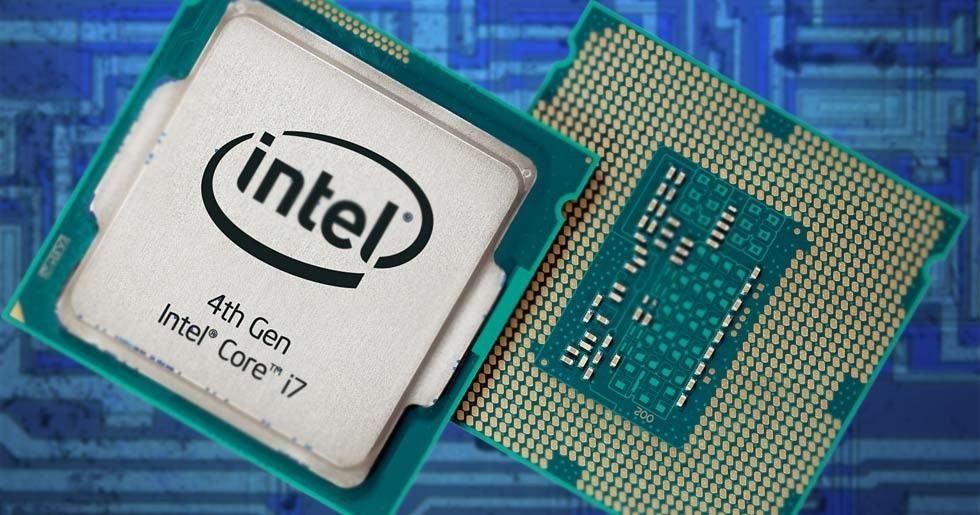

I datorn finns alla komponenter som krävs och allt funkar som det ska. Men hur?
Det är nämligen processorn, även kallad CPU (Central Processing Unit), som är hjärnan i kretsen och får alla bitar att falla på plats. Denna komponent är den som får din dator att verka smart då det är den som sköter alla beräkningar och tar fram svaren. Som av de flesta andra komponenter så finns även här en uppsjö av modeller att välja mellan och vilken du behöver beror helt och hållet på vad man ska använda datorn till. Ju större arbeten och tyngre program du använder, desto kraftfullare processor behöver du.
Idag är Intel och AMD de ledande företagen på marknaden som har flera olika modeller av processorer och det kan vara svårt att veta vad som är rätt för just din dator men generellt sett så är de dyrare varianterna ett måste för en dator som ska hantera tunga projekt så som videoredigering eller CAD program, och de billigare räcker gott till en dator som är till för lättare arbeten och vardagssysslor på skärmen.
Det är nämligen processorn, även kallad CPU (Central Processing Unit), som är hjärnan i kretsen och får alla bitar att falla på plats. Denna komponent är den som får din dator att verka smart då det är den som sköter alla beräkningar och tar fram svaren. Som av de flesta andra komponenter så finns även här en uppsjö av modeller att välja mellan och vilken du behöver beror helt och hållet på vad man ska använda datorn till. Ju större arbeten och tyngre program du använder, desto kraftfullare processor behöver du.
Idag är Intel och AMD de ledande företagen på marknaden som har flera olika modeller av processorer och det kan vara svårt att veta vad som är rätt för just din dator men generellt sett så är de dyrare varianterna ett måste för en dator som ska hantera tunga projekt så som videoredigering eller CAD program, och de billigare räcker gott till en dator som är till för lättare arbeten och vardagssysslor på skärmen.
